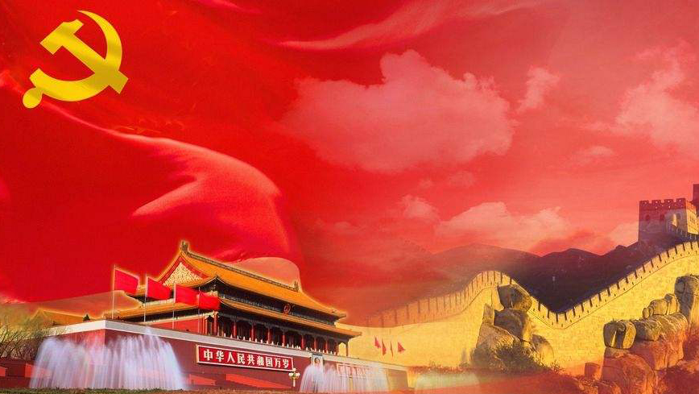
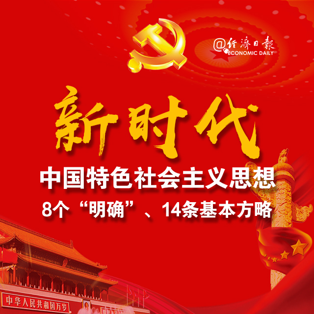
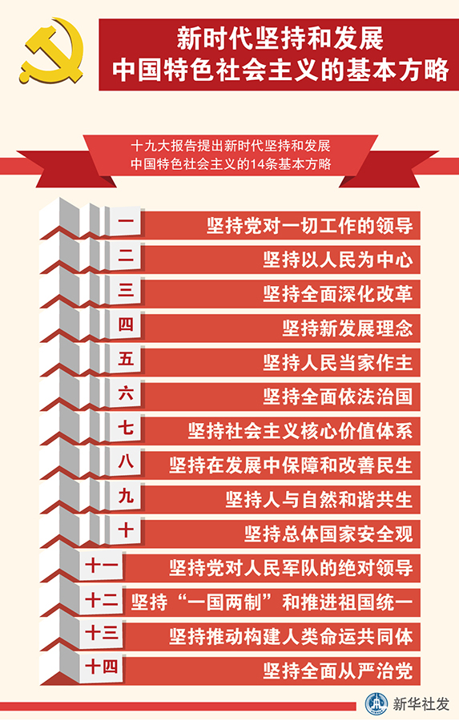
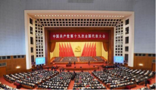
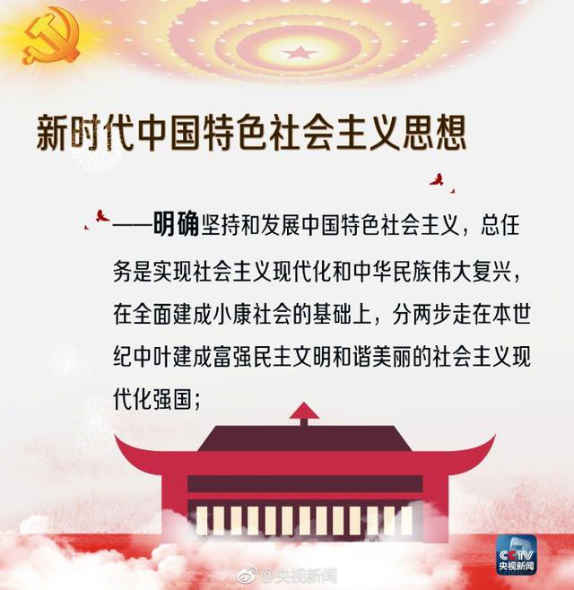
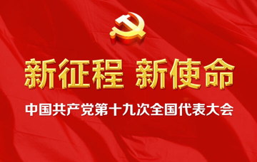

十八大以来，国内外形势变化和我国各项事业发展都给我们提出了一个重大时代课题，这就是必须从理论和实践结合上系统回答新时代坚持和发展什么样的中国特色社会主义、怎样坚持和发展中国特色社会主义，包括新时代坚持和发展中国特色社会主义的总目标、总任务、总体布局、战略布局和发展方向、发展方式、发展动力、战略步骤、外部条件、政治保证等基本问题，并且要根据新的实践对经济、政治、法治、科技、文化、教育、民生、民族、宗教、社会、生态文明、国家安全、国防和军队、“一国两制”和祖国统一、统一战线、外交、党的建设等各方面作出理论分析和政策指导，以利于更好坚持和发展中国特色社会主义。

围绕这个重大时代课题，我们党坚持以马克思列宁主义、毛泽东思想、邓小平理论、“三个代表”重要思想、科学发展观为指导，坚持解放思想、实事求是、与时俱进、求真务实，坚持辩证唯物主义和历史唯物主义，紧密结合新的时代条件和实践要求，以全新的视野深化对共产党执政规律、社会主义建设规律、人类社会发展规律的认识，进行艰辛理论探索，取得重大理论创新成果，形成了新时代中国特色社会主义思想。
新时代中国特色社会主义思想，明确坚持和发展中国特色社会主义，总任务是实现社会主义现代化和中华民族伟大复兴，在全面建成小康社会的基础上，分两步走在本世纪中叶建成富强民主文明和谐美丽的社会主义现代化强国；明确新时代我国社会主要矛盾是人民日益增长的美好生活需要和不平衡不充分的发展之间的矛盾，必须坚持以人民为中心的发展思想，不断促进人的全面发展、全体人民共同富裕；明确中国特色社会主义事业总体布局是“五位一体”、战略布局是“四个全面”，强调坚定道路自信、理论自信、制度自信、文化自信；明确全面深化改革总目标是完善和发展中国特色社会主义制度、推进国家治理体系和治理能力现代化；明确全面推进依法治国总目标是建设中国特色社会主义法治体系、建设社会主义法治国家；明确党在新时代的强军目标是建设一支听党指挥、能打胜仗、作风优良的人民军队，把人民军队建设成为世界一流军队；明确中国特色大国外交要推动构建新型国际关系，推动构建人类命运共同体；明确中国特色社会主义最本质的特征是中国共产党领导，中国特色社会主义制度的最大优势是中国共产党领导，党是最高政治领导力量，提出新时代党的建设总要求，突出政治建设在党的建设中的重要地位。

新时代中国特色社会主义思想，是对马克思列宁主义、毛泽东思想、邓小平理论、“三个代表”重要思想、科学发展观的继承和发展，是马克思主义中国化最新成果，是党和人民实践经验和集体智慧的结晶，是中国特色社会主义理论体系的重要组成部分，是全党全国人民为实现中华民族伟大复兴而奋斗的行动指南，必须长期坚持并不断发展。
全党要深刻领会新时代中国特色社会主义思想的精神实质和丰富内涵，在各项工作中全面准确贯彻落实。

（一）坚持党对一切工作的领导。党政军民学，东西南北中，党是领导一切的。必须增强政治意识、大局意识、核心意识、看齐意识，自觉维护党中央权威和集中统一领导，自觉在思想上政治上行动上同党中央保持高度一致，完善坚持党的领导的体制机制，坚持稳中求进工作总基调，统筹推进“五位一体”总体布局，协调推进“四个全面”战略布局，提高党把方向、谋大局、定政策、促改革的能力和定力，确保党始终总揽全局、协调各方。
（二）坚持以人民为中心。人民是历史的创造者，是决定党和国家前途命运的根本力量。必须坚持人民主体地位，坚持立党为公、执政为民，践行全心全意为人民服务的根本宗旨，把党的群众路线贯彻到治国理政全部活动之中，把人民对美好生活的向往作为奋斗目标，依靠人民创造历史伟业。
（三）坚持全面深化改革。只有社会主义才能救中国，只有改革开放才能发展中国、发展社会主义、发展马克思主义。必须坚持和完善中国特色社会主义制度，不断推进国家治理体系和治理能力现代化，坚决破除一切不合时宜的思想观念和体制机制弊端，突破利益固化的藩篱，吸收人类文明有益成果，构建系统完备、科学规范、运行有效的制度体系，充分发挥我国社会主义制度优越性。
（四）坚持新发展理念。发展是解决我国一切问题的基础和关键，发展必须是科学发展，必须坚定不移贯彻创新、协调、绿色、开放、共享的发展理念。必须坚持和完善我国社会主义基本经济制度和分配制度，毫不动摇巩固和发展公有制经济，毫不动摇鼓励、支持、引导非公有制经济发展，使市场在资源配置中起决定性作用，更好发挥政府作用，推动新型工业化、信息化、城镇化、农业现代化同步发展，主动参与和推动经济全球化进程，发展更高层次的开放型经济，不断壮大我国经济实力和综合国力。
（五）坚持人民当家作主。坚持党的领导、人民当家作主、依法治国有机统一是社会主义政治发展的必然要求。必须坚持中国特色社会主义政治发展道路，坚持和完善人民代表大会制度、中国共产党领导的多党合作和政治协商制度、民族区域自治制度、基层群众自治制度，巩固和发展最广泛的爱国统一战线，发展社会主义协商民主，健全民主制度，丰富民主形式，拓宽民主渠道，保证人民当家作主落实到国家政治生活和社会生活之中。
（六）坚持全面依法治国。全面依法治国是中国特色社会主义的本质要求和重要保障。必须把党的领导贯彻落实到依法治国全过程和各方面，坚定不移走中国特色社会主义法治道路，完善以宪法为核心的中国特色社会主义法律体系，建设中国特色社会主义法治体系，建设社会主义法治国家，发展中国特色社会主义法治理论，坚持依法治国、依法执政、依法行政共同推进，坚持法治国家、法治政府、法治社会一体建设，坚持依法治国和以德治国相结合，依法治国和依规治党有机统一，深化司法体制改革，提高全民族法治素养和道德素质。
（七）坚持社会主义核心价值体系。文化自信是一个国家、一个民族发展中更基本、更深沉、更持久的力量。必须坚持马克思主义，牢固树立共产主义远大理想和中国特色社会主义共同理想，培育和践行社会主义核心价值观，不断增强意识形态领域主导权和话语权，推动中华优秀传统文化创造性转化、创新性发展，继承革命文化，发展社会主义先进文化，不忘本来、吸收外来、面向未来，更好构筑中国精神、中国价值、中国力量，为人民提供精神指引。
（八）坚持在发展中保障和改善民生。增进民生福祉是发展的根本目的。必须多谋民生之利、多解民生之忧，在发展中补齐民生短板、促进社会公平正义，在幼有所育、学有所教、劳有所得、病有所医、老有所养、住有所居、弱有所扶上不断取得新进展，深入开展脱贫攻坚，保证全体人民在共建共享发展中有更多获得感，不断促进人的全面发展、全体人民共同富裕。建设平安中国，加强和创新社会治理，维护社会和谐稳定，确保国家长治久安、人民安居乐业。
（九）坚持人与自然和谐共生。建设生态文明是中华民族永续发展的千年大计。必须树立和践行绿水青山就是金山银山的理念，坚持节约资源和保护环境的基本国策，像对待生命一样对待生态环境，统筹山水林田湖草系统治理，实行最严格的生态环境保护制度，形成绿色发展方式和生活方式，坚定走生产发展、生活富裕、生态良好的文明发展道路，建设美丽中国，为人民创造良好生产生活环境，为全球生态安全作出贡献。
（十）坚持总体国家安全观。统筹发展和安全，增强忧患意识，做到居安思危，是我们党治国理政的一个重大原则。必须坚持国家利益至上，以人民安全为宗旨，以政治安全为根本，统筹外部安全和内部安全、国土安全和国民安全、传统安全和非传统安全、自身安全和共同安全，完善国家安全制度体系，加强国家安全能力建设，坚决维护国家主权、安全、发展利益。
（十一）坚持党对人民军队的绝对领导。建设一支听党指挥、能打胜仗、作风优良的人民军队，是实现“两个一百年”奋斗目标、实现中华民族伟大复兴的战略支撑。必须全面贯彻党领导人民军队的一系列根本原则和制度，确立新时代党的强军思想在国防和军队建设中的指导地位，坚持政治建军、改革强军、科技兴军、依法治军，更加注重聚焦实战，更加注重创新驱动，更加注重体系建设，更加注重集约高效，更加注重军民融合，实现党在新时代的强军目标。

（十二）坚持“一国两制”和推进祖国统一。保持香港、澳门长期繁荣稳定，实现祖国完全统一，是实现中华民族伟大复兴的必然要求。必须把维护中央对香港、澳门特别行政区全面管治权和保障特别行政区高度自治权有机结合起来，确保“一国两制”方针不会变、不动摇，确保“一国两制”实践不变形、不走样。必须坚持一个中国原则，坚持“九二共识”，推动两岸关系和平发展，深化两岸经济合作和文化往来，推动两岸同胞共同反对一切分裂国家的活动，共同为实现中华民族伟大复兴而奋斗。
（十三）坚持推动构建人类命运共同体。中国人民的梦想同各国人民的梦想息息相通，实现中国梦离不开和平的国际环境和稳定的国际秩序。必须统筹国内国际两个大局，始终不渝走和平发展道路、奉行互利共赢的开放战略，坚持正确义利观，树立共同、综合、合作、可持续的新安全观，谋求开放创新、包容互惠的发展前景，促进和而不同、兼收并蓄的文明交流，构筑尊崇自然、绿色发展的生态体系，始终做世界和平的建设者、全球发展的贡献者、国际秩序的维护者。
（十四）坚持全面从严治党。勇于自我革命，从严管党治党，是我们党最鲜明的品格。必须以党章为根本遵循，把党的政治建设摆在首位，思想建党和制度治党同向发力，统筹推进党的各项建设，抓住“关键少数”，坚持“三严三实”，坚持民主集中制，严肃党内政治生活，严明党的纪律，强化党内监督，发展积极健康的党内政治文化，全面净化党内政治生态，坚决纠正各种不正之风，以零容忍态度惩治腐败，不断增强党自我净化、自我完善、自我革新、自我提高的能力，始终保持党同人民群众的血肉联系。

以上十四条，构成新时代坚持和发展中国特色社会主义的基本方略。全党同志必须全面贯彻党的基本理论、基本路线、基本方略，更好引领党和人民事业发展。
实践没有止境，理论创新也没有止境。世界每时每刻都在发生变化，中国也每时每刻都在发生变化，我们必须在理论上跟上时代，不断认识规律，不断推进理论创新、实践创新、制度创新、文化创新以及其他各方面创新。
同志们！时代是思想之母，实践是理论之源。只要我们善于聆听时代声音，勇于坚持真理、修正错误，二十一世纪中国的马克思主义一定能够展现出更强大、更有说服力的真理力量！

本文系作者授权百度百家发表，未经许可，不得转载。